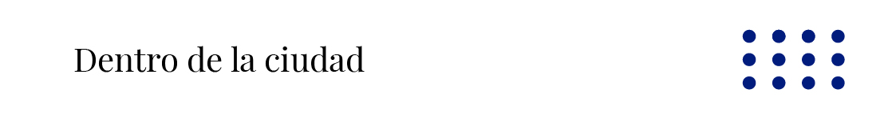

Dron de Transporte
Consideramos que la mejor manera de abordar este problema es despegarnos del suelo, calles y autopistas son innecesarias si se invierte en el transporte aéreo urbano, por lo que nuestra propuesta desarrolla un servicio de transporte aéreo de personas y recursos dentro de la ciudad. Buscamos que las personas tengan libertad de moverse a los distintos servicios de transporte, conectando la ciudad y las personas a través del cielo.

Para ello desarrollaremos un servicio de drones de carga, capaces de transportar una cápsula de pasajeros o recursos, el dron responde a una institución dedicada a la automatización del servicio que controle el tránsito aéreo y permita una movilidad segura por el espacio aéreo. El dron debe tener un sistema que acople la cápsula de forma mecánica para ahorrar energía en la unión, del mismo modo, debe tener un control de estabilidad suficiente para realizar un acople en lugares angostos. Este sistema busca remplazar la necesidad de utilizar un vehículo para transportarse distancias medias o largas, disminuir la contaminación directa e indirecta, y disminuir los tiempos de traslado. Las cabinas son de venta individual, su nivel de personalización o lujo dependerá del interés del usuario, similar a lo que ocurre con las categorías de automóviles hoy en día.

Materialidad
Estructura del Dron:
Normalmente se realizan aleaciones ligeras de aluminio, magnesio y titanio, pero últimamente se han utilizado fibra de carbono, fibra de vidrio y plástico. Consideramos que utilizar fibra de carbono puede ser el método para reducir el peso y aumentar la resistencia del chasis del dron, de esta forma, utilizar fibra de carbono o kevlar para el esqueleto puede ser la respuesta indicada para generar una estructura de seguridad para los pasajeros.
Motores:
Se dividen en dos categorías, bifásicos y trifásicos. Los motores bifásicos si bien son más económicos, suponen un riesgo que impide implementarlos en el transporte de pasajeros. En cambio, los trifásicos logran una estabilidad y seguridad más recomendable, del mismo modo, en la actualidad existen motores híbridos que combinan electricidad y otros combustibles como hidrógeno, estos tienen una capacidad y potencia de vuelo mayor, lo distinguimos como un desarrollo previo a la total electromovilidad aérea.
Hélices
Existen de dos y tres aspas, el consumo aumenta mientras mayor sea la superficie de la hélice, asimismo, la capacidad de carga del dron es directamente proporcional a la potencia que pueda generar la hélice. Hay que buscar el equilibrio entre potencia y gasto energético utilizando el tamaño de la hélice para encontrar el punto ideal, es por ello que utilizaremos hélices de 3 aspas por su potencial de carga y además, porque las aspas suelen dañarse apresuradamente. Si se daña una se puede realizar un aterrizaje seguro con 2 aspas en uno de los motores, el material recomendado es la fibra de carbono, también se usa plástico o nylon pero su uso es muy inseguro para el transporte de personas.
Baterías
Este es el punto que requiere mayor desarrollo tecnológico para implementarse, necesitamos baterías de carga rápida y también, que ofrezcan una eficiencia durante el trayecto. Decidimos utilizar baterías de Li-Po o polímero de litio, si bien existen baterías que se cargan más rápido, ofrecen una versatilidad mayor en espacio que utilizan y son inflamables.
Placa controladora de vuelo
Se necesita un registro total del vuelo del dron, es por esto que se planea utilizar sensores de altura, variación de altura, posición, velocidad, un giroscopio, GPS y brújula. Asimismo, el dron estará realizando actualizaciones de su posición constantemente con el fin de poder rastrear el transporte y establecer rutas de transporte seguras por la ciudad.
Cabina
Desarrollaremos una cabina o cápsula para el transporte, creemos que una solución inteligente es externalizar el transporte al servicio de drones, con esto evitamos exigir un conocimiento técnico y destreza a los usuarios. Por lo que la cápsula puede ubicarse en estacionamientos sobre las azoteas de edificio e incluso en algunos pisos intermedios, como balcones extendidos o espacios interiores. A su vez, creemos que la propuesta pública que desarrollamos junto a la ciudad conlleva generar espacios de aparcamiento de drones en la vía publica cosa de no necesitar de un lugar en específico. La cabina está compuesta de una cápsula y un tren de aterrizaje, del mismo modo que es la encargada de mantener a los pasajeros seguros durante el vuelo, es también la encargada de suministrar energía almacenada durante el tiempo en que se encuentre en tierra. Los edificios generan energía y esta se almacena dentro de las cabinas. Una vez el dron se conecta a la cabina, esta suministra energía al dron durante todo el trayecto, con lo que se consigue una mejor autonomía.

La materialidad de la cabina es similar a la del dron, el principal desafío es generar un sistema de seguridad en caso de accidente, para ello debemos generar una cabina resistente de titanio o fibra de carbono, con el fin de mantener pesos ligeros y, a su vez, impedir que la deformación de un impacto afecte a los pasajeros. El tren de aterrizaje responde a la necesidad de descender en lugares no urbanizados o en sitios no aptos para aparcar. Si bien, en su mayoría los aterrizajes serán en zonas previamente preparadas, existe la posibilidad de que las personas decidan visitar zonas no acondicionadas para el transporte aéreo, por lo que el tren de aterrizaje entrega esa posibilidad a las personas.